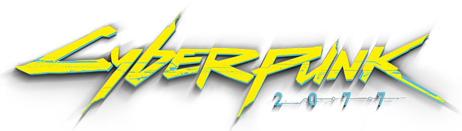
MODS
A selection of mods for Cyberpunk 2077. This section is just waiting to expand.
Gameplay
Graphic
Technical
Gameplay
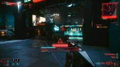
AI Netrunners Enhanced
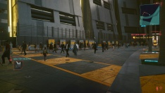
Alternate Crowd Behavior
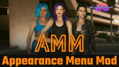
Appearance Menu Mod
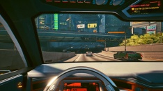
Better Acceleration for Keyboards
Bike Overhaul
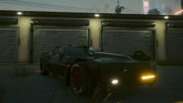
Car Modification Shop
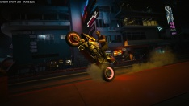
Crowds and Traffic
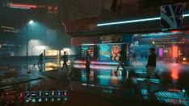
Custom Quickslots
Cyber Vehicle Overhaul
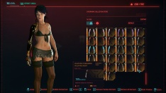
CyberArms Collection
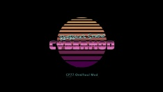
CyberMod
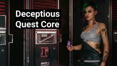
Deceptious Quest Core
Drone Companions
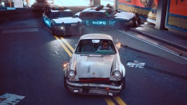
Enhanced Police
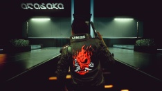
Full Gameplay Rebalance
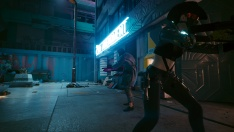
Gangs of Night City
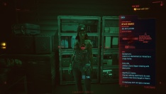
Kiroshi Opticals - Crowd Scanner
Legendary Cyberware Collection
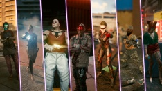
Lifepath Bonuses and Gang-Corp Traits
Limited Hub
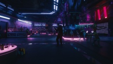
Lizzy's Bar Enhanced
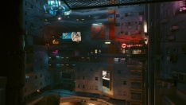
Megabuildings Expanded
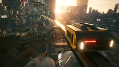
Metro System
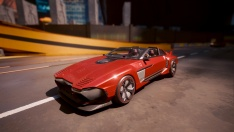
Mizutani Shion Targa MZT
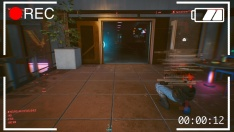
Nano Drone
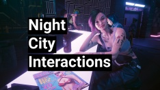
Night City Interactions
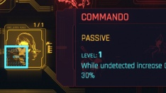
Perks Overhaul
Phone Message Overhaul
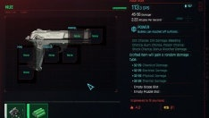
Preem Weaponsmith
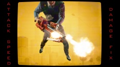
Ranged Attack Speed Damage Fix
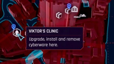
Real Vendor Names
Realistic Combat Overhaul
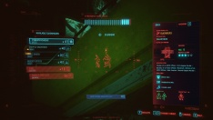
Restore Legendary Ping
Scissors Difficulty Options
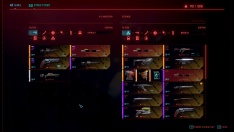
Stash Filters
Stock Market and News System
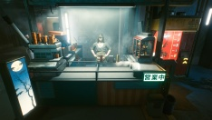
Street Vendors
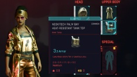
StreetStyle
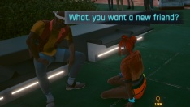
Talk to Me
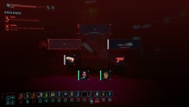
Toxicity
Turbo-R Arcadia
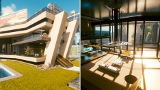
V's Edgerunners Mansion
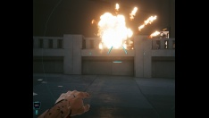
Varied Projectile Launcher Effects
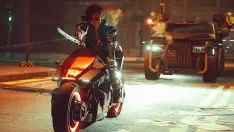
Vehicle Combat
Vehicle Pack - Basic
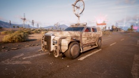
Vehicle Pack - Corpo
Vehicle Pack - Gangs
Vehicle Pack - Utility
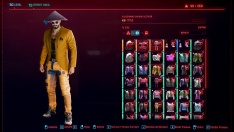
Virtual Atelier
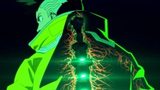
Wannabe Edgerunner
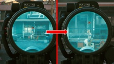
Zoomable Scopes
Graphic
Alt Character Lighting
Custom Hairstyle - The Major
Draw Distance Boost
Enhanced Weather
HD Reworked Project
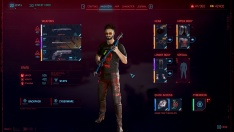
Hide Your Gear
Immersive First Person
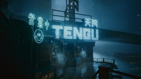
Improved Rain Effect
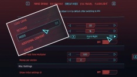
Native Settings UI
Natural Californian Lighting
Preem Water
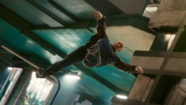
Ragdoll Physics Overhaul
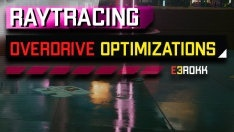
Raytracing Overdrive Optimizations
Weather Probability Rebalance
Technical
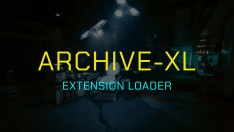
ArchiveXL
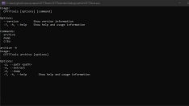
CP77Tools
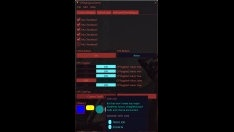
CPStyling
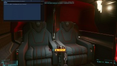
Cyber Engine Tweaks
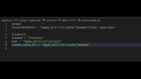
CyberCMD
Cyberscript Core
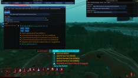
Cyberscript Studio
Input Loader
No Intro Videos
No Special Outfit Lock
RED4ext
Redscript
TweakXL
Virtual Car Dealer